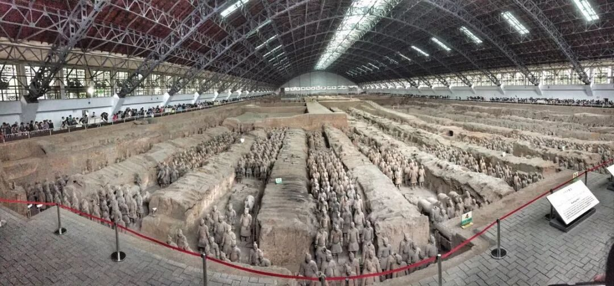
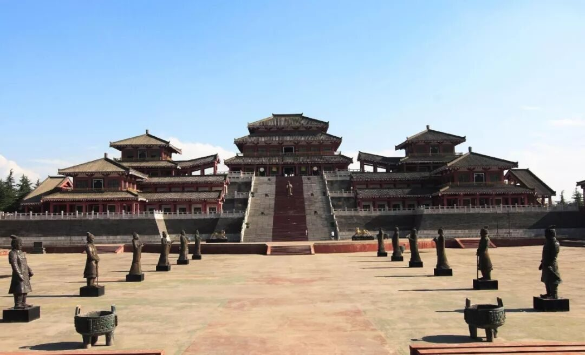
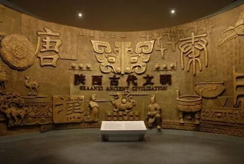
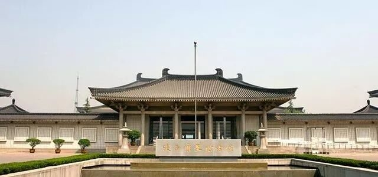
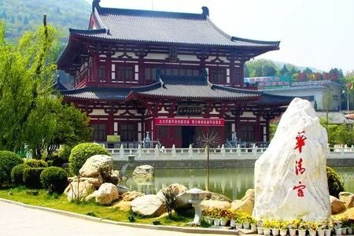
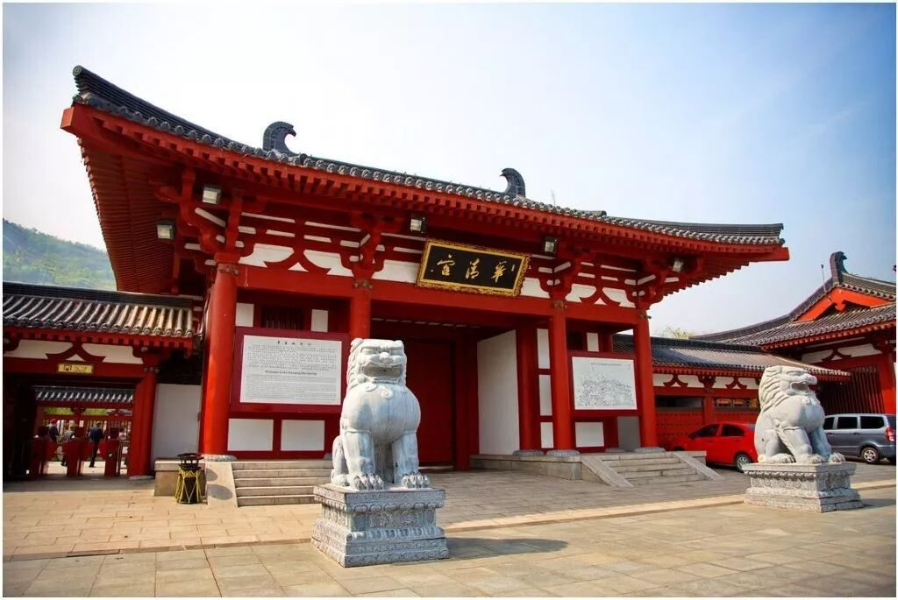
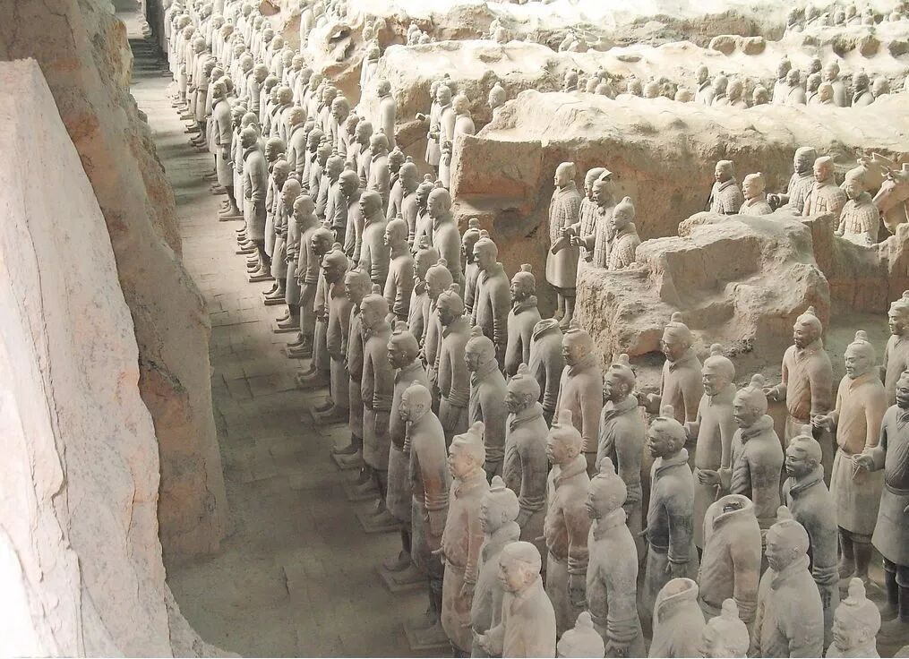

【行者无疆——邂逅长安】

”行者无疆 韶忆长安“
地点介绍篇
旅舍残春宿雨晴
恍然心地忆咸京
树头蜂抱花须落
池面鱼吹柳絮行
禅伏诗魔归净域
酒冲愁阵出奇兵
两梁免被尘埃污
拂拭朝簪待眼明
风若遥远的回音，追着梦的翅膀；在亘古不变的神话里寻找一个金壁辉煌的王朝；古老的风铃开始变奏，浑厚如黄钟大吕的音符直贯苍穹；一袭轻纱下的曼妙舞蹈，摇醒了一个盛世的传说。
——————————
在文化传承的路上，行者们从未停歇。这次，请跟随行者的脚步，一起走进长安，走进这文化古都。


———————————————阿房宫，“秦始皇的四大工程”之一，中国首次统一的标志性建筑，也是华夏民族开始形成的实物标识。作为国家重点保护对象，它被联合国确定为世界上最大的宫殿基址，属于世界奇迹。杜牧笔下的它楼宇错落，长桥卧波，极尽壮美奢华。而今立足于总面积高达15平方公里的遗址，便得见其当年规模之庞大，气势之宏伟，工程之浩大。无愧于其“天下第一宫”的美誉。
陕西省历史博物
被誉为“古都明珠，华夏宝库”的陕西历史博物馆是展示陕西历史文化和中国古代文明的艺术殿堂。作为中国第一座大型现代化国家级博物馆，其建成标志着中国博物馆事业迈入了新的发展里程。馆舍为“中央殿堂、四隅崇楼”的唐风建筑群，主次井然，展厅面积11000平方米。包括18件（组）国宝级文物在内，馆藏多达 370000余件，时间跨度长达一百多万年。真正做到了在揭示历史文物的丰富文化内涵的同时展现华夏民族博大精深的文明成就。


华清宫(华清池·骊山)位于西安城东30公里。周、秦、汉、隋、唐等历代帝王均在此建有离宫别苑。亘古不变的温泉资源、烽火戏诸侯的历史典故、唐明皇与杨贵妃的爱情故事、“西安事变”的发生地都令这里变得颇具特色也格外耐人寻味。华清宫背山面渭，倚骊峰山势而筑，规模宏大，建筑壮丽，楼台馆殿，遍布骊山上下，在唐诗人白居易《骊宫高》“高高骊山上有宫，朱楼紫殿三四重”一句中便已可见一斑。


兵马俑，“世界第八大奇迹”，“二十世纪考古史上的伟大发现之一”。秦始皇陵（包括兵马俑坑），被联合国教科文组织列入“世界文化遗产名录”。这些美誉评价都证明了秦始皇兵马俑博物馆的举世无双。陶俑，铜车，战马，武器……是千年前的军队严阵以待；将军，武士，军吏，骑兵……是胜利之师势不可挡。前不见古人，后不见来者，它不仅是中国人民、也是全人类的一份珍贵文化财富。

折好满纸才子的情高遐想，行者的脚步驻足，枕琴声做一场崇古清梦，惟愿醉于此间。

图片丨行者无疆实践团
文字丨李竹晴
责编丨牛直达
审核丨邓子孚 潘雯雯
行者无疆实践团
QQ：2758025831

随行者一起认识世界
长按二维码关注